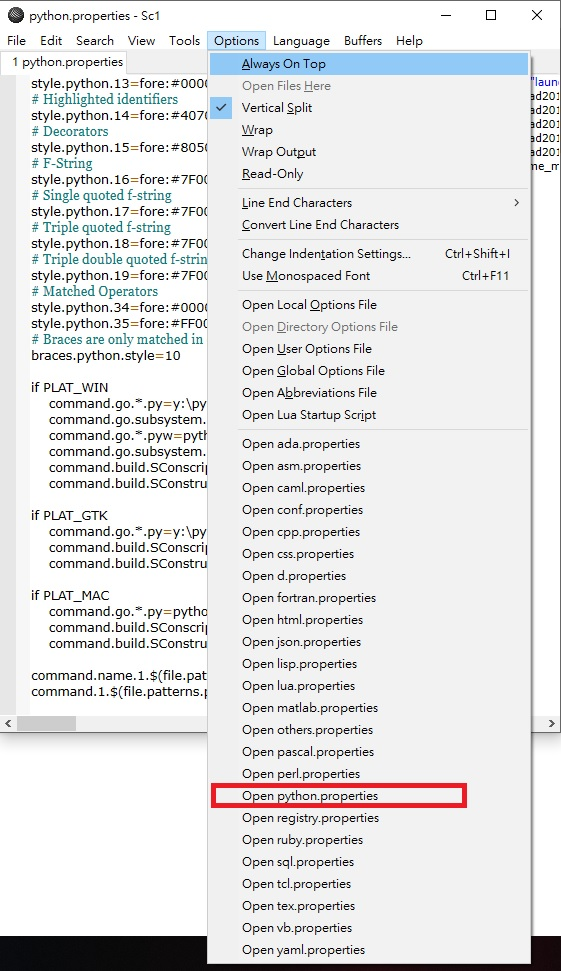

week 3 <<
Previous Next >> week 5
week 4
無法執行launchleo.py
當更新python為3.8.2版本並且要執行launchleo.py發現無法像之前一樣順利開啟。
解決方法:
1.開啟start.bat
2.進入SciTE程式編輯器，點選options
3.點選open python properties

4.使用Ctrl+F 尋找 py373
5.將py373更改為可攜裝置中的python3.8.2的資料夾名稱
範例:
我的python3.8.2資料夾名稱為py382
# Define SciTE settings for Python files.
file.patterns.py=*.py;*.pyw;*.pyx;*.pxd;*.pxi
file.patterns.scons=SConstruct;SConscript
*source.patterns.python=$(file.patterns.py);
shbang.python=py
filter.python=Python (py pyw)|$(file.patterns.py)|
*filter.python=$(filter.python)
lexer.$(file.patterns.py)=python
lexer.$(file.patterns.scons)=python
*language.python=Pytho&n|py||
keywordclass.python2=and as assert break class continue def del elif \
else except exec finally for from global if import in is lambda not \
or pass print raise return try while with yield
keywordclass.python3=False None True and as assert break class continue \
def del elif else except finally for from global if import in is lambda \
nonlocal not or pass raise return try while with yield
keywordclass.python=$(keywordclass.python2)
# Extra keywords for cython
keywordclass.cython=cdef cimport cpdef
keywords.$(file.patterns.py)=$(keywordclass.python) $(keywordclass.cython)
keywords.$(file.patterns.scons)=$(keywordclass.python)
# If you uncomment the 3 lines below,
# and put some words after "keywordclass2.python=",
# those words will be styled by style.python.14
#keywordclass2.python=
#keywords2.$(file.patterns.py)=$(keywordclass2.python)
#keywords2.$(file.patterns.scons)=$(keywordclass2.python)
# Use 2 sets of substyles to highlight standard library modules and
# imports from the future.
# Additional identifier sets can be added by incrementing the next
# line's value and adding extra definitions similar to below.
substyles.python.11=2
substylewords.11.1.$(file.patterns.py)=\
__main__ _dummy_thread _thread abc aifc argparse \
array ast asynchat asyncio asyncore atexit audioop \
base64 bdb binascii binhex bisect builtins bz2 \
calendar cgi cgitb chunk cmath cmd code codecs \
codeop collections colorsys compileall concurrent \
configparser contextlib copy copyreg crypt csv \
ctypes curses datetime dbm decimal difflib dis \
distutils dummy_threading email ensurepip enum \
errno faulthandler fcntl filecmp fileinput fnmatch \
formatter fpectl fractions ftplib functools gc getopt \
getpass gettext glob grp gzip hashlib heapq hmac \
html http http imaplib imghdr importlib inspect io \
ipaddress itertools json keyword linecache locale \
logging lzma macpath mailbox mailcap marshal math \
mimetypes mmap modulefinder msilib msvcrt \
multiprocessing netrc nis nntplib numbers operator \
os os ossaudiodev parser pathlib pdb pickle \
pickletools pipes pkgutil platform plistlib poplib posix \
pprint pty pwd py_compile pyclbr queue quopri \
random re readline reprlib resource rlcompleter runpy \
sched select selectors shelve shlex shutil signal site \
smtpd smtplib sndhdr socket socketserver spwd \
sqlite3 ssl stat statistics string stringprep struct \
subprocess sunau symbol symtable sys sysconfig \
syslog tabnanny tarfile telnetlib tempfile termios \
textwrap threading time timeit tkinter token \
tokenize trace traceback tracemalloc tty turtle \
types unicodedata unittest urllib uu uuid venv warnings \
wave weakref webbrowser winreg winsound wsgiref \
xdrlib xml xmlrpc zipfile zipimport zlib
style.python.11.1=fore:#DD9900
substylewords.11.2.$(file.patterns.py)=__future__ \
with_statement unicode_literals print_function
style.python.11.2=fore:#EE00AA,italics
#~ statement.indent.$(file.patterns.py)=10 :
statement.indent.$(file.patterns.py)=5 class def elif else except finally \
for if try while with
statement.lookback.$(file.patterns.py)=0
block.start.$(file.patterns.py)=
block.end.$(file.patterns.py)=
view.indentation.examine.*.py=2
tab.timmy.whinge.level=1
#fold.quotes.python=1
comment.block.python=#~
indent.python.colon=1
# Python styles
# White space
style.python.0=fore:#808080
# Comment
style.python.1=fore:#007F00,$(font.comment)
# Number
style.python.2=fore:#007F7F
# String
style.python.3=fore:#7F007F,$(font.monospace)
# Single quoted string
style.python.4=fore:#7F007F,$(font.monospace)
# Keyword
style.python.5=fore:#00007F,bold
# Triple quotes
style.python.6=fore:#7F0000
# Triple double quotes
style.python.7=fore:#7F0000
# Class name definition
style.python.8=fore:#0000FF,bold
# Function or method name definition
style.python.9=fore:#007F7F,bold
# Operators
style.python.10=bold
# Identifiers
style.python.11=
# Comment-blocks
style.python.12=fore:#7F7F7F
# End of line where string is not closed
style.python.13=fore:#000000,$(font.monospace),back:#E0C0E0,eolfilled
# Highlighted identifiers
style.python.14=fore:#407090
# Decorators
style.python.15=fore:#805000
# F-String
style.python.16=fore:#7F007F,$(font.monospace)
# Single quoted f-string
style.python.17=fore:#7F007F,$(font.monospace)
# Triple quoted f-string
style.python.18=fore:#7F0000
# Triple double quoted f-string
style.python.19=fore:#7F0000
# Matched Operators
style.python.34=fore:#0000FF,bold
style.python.35=fore:#FF0000,bold
# Braces are only matched in operator style
braces.python.style=10
if PLAT_WIN
command.go.*.py=y:\py382\pythonw -u "$(FileNameExt)"
command.go.subsystem.*.py=1
command.go.*.pyw=pythonw -u "$(FileNameExt)"
command.go.subsystem.*.pyw=1
command.build.SConscript=scons.bat --up .
command.build.SConstruct=scons.bat .
if PLAT_GTK
command.go.*.py=y:\py382\python -u "$(FileNameExt)"
command.build.SConscript=scons --up .
command.build.SConstruct=scons .
if PLAT_MAC
command.go.*.py=python -u "$(FileNameExt)"
command.build.SConscript=scons --up .
command.build.SConstruct=scons .
command.name.1.$(file.patterns.py)=Syntax Check
command.1.$(file.patterns.py)=python -c "import py_compile; py_compile.compile(r'$(FilePath)')"
將launchleo.py檔案放入SciTE編輯器就能夠順利開啟leo Editor
如果更改完LEO閃退，可能是當前LEO版本問題可以試著更新看看
pip install --upgrade leo
week 3 <<
Previous Next >> week 5